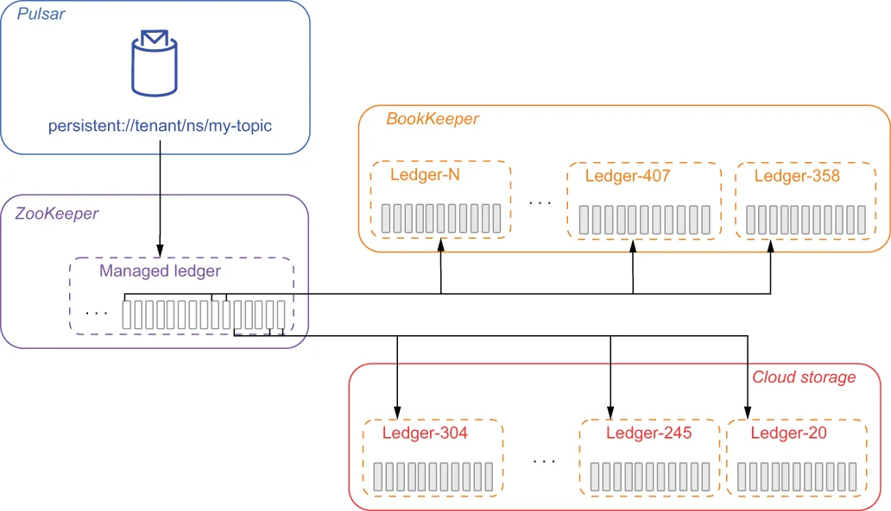

Pulsar’s tiered storage feature allows older topic data to be offloaded to more cost-effective long-term storage, thereby freeing up disk space inside of the bookies. To the end user, there is no difference between consuming a topic whose data is stored inside Apache BookKeeper or one whose data is on tiered storage. The clients still produce and consume messages in the same way, and the entire process is handled transparently behind the scenes.
Pulsar 的分层存储特性允许把较旧的主题数据卸载到更具成本效益的长期存储上，从而释放 bookie 内部的磁盘空间。对终端用户而言，消费一个数据存放在 Apache BookKeeper 中的主题，与消费一个数据位于分层存储上的主题，没有任何区别。客户端仍然以相同的方式生产和消费消息，整个过程都在幕后被透明地处理。
As we discussed earlier, Apache Pulsar stores topics as an ordered list of ledgers that are spread across the bookies in the storage layer. Because these ledgers are append-only, new messages are only written to the final ledger in the list. All the previous ledgers are sealed, so the data within the segment is immutable. Because the data is immutable, it can be easily be copied to another storage system, such as cloud storage.
正如我们前面讨论过的，Apache Pulsar 把主题存储为一个有序的 ledger 列表，这些 ledger 分散在存储层的各个 bookie 上。由于这些 ledger 是仅追加的，新消息只会被写入列表中的最后一个 ledger。之前的所有 ledger 都已被封存，因此分段内的数据是不可变的。正因为数据不可变，它可以被轻松拷贝到另一个存储系统，例如云存储。
Once the copy is complete, the managed ledger information can be updated to reflect the new storage location of the data, as shown in figure 2.19, and the original copy of the data stored in Apache BookKeeper can be deleted. When a ledger is offloaded to an external storage system, the ledgers are copied to that storage system one by one, from oldest to newest.
拷贝完成之后，managed ledger 的信息就可以被更新，以反映数据的新存储位置，如图 2.19 所示；而存放在 Apache BookKeeper 中的原始数据副本则可以被删除。当某个 ledger 被卸载到外部存储系统时，这些 ledger 会按从最旧到最新的顺序被逐个拷贝到该存储系统。

Figure 2.19 When using tiered storage, ledgers that have been closed can be copied over to cloud storage and removed from the bookies to free up space. The managed ledger entries are updated to reflect the new location of the ledgers, which can still be read by the topic consumers.
图 2.19 使用分层存储时，已关闭的 ledger 可以被拷贝到云存储，并从 bookie 中移除以释放空间。managed ledger 的条目会被更新以反映这些 ledger 的新位置，主题的消费者仍然可以读取它们。
Apache Pulsar currently supports multiple cloud storage systems for tiered storage, but I will focus on using AWS in this section. Please consult the documentation for more details on how to use other cloud vendors’ storage systems.
Apache Pulsar 目前支持用多种云存储系统来做分层存储，但在本节中我将重点介绍如何使用 AWS。关于如何使用其他云厂商的存储系统，请查阅文档以获取更多细节。
AWS offload configuration
AWS 卸载配置
The first steps you need to perform are to create the S3 bucket you will be using to store the offloaded ledgers and to ensure that the AWS account you are going to use has sufficient permissions to read and write data to the bucket. Once those are completed, you will need to modify the broker configuration settings again, as shown in the following listing.
你首先需要执行的步骤是：创建用于存放被卸载的 ledger 的 S3 存储桶，并确保你将要使用的 AWS 账户具备向该桶读写数据的足够权限。这些完成之后，你还需要再次修改 broker 的配置设置，如下面的清单所示。
Listing 2.6 Configuring AWS tiered storage in Pulsar
managedLedgerOffloadDriver=aws-s3 ❶
s3ManagedLedgerOffloadBucket=offload-test-aws ❷
s3ManagedLedgerOffloadRegion=us-east-1 ❸
s3ManagedLedgerOffloadRole=<aws role arn> ❹
s3ManagedLedgerOffloadRoleSessionName=pulsar-s3-offload ❺
❶ Specifies the offload driver type as AWS S3
❶ 指定卸载驱动类型为 AWS S3
❷ The S3 bucket name used for ledger storage
❷ 用于存放 ledger 的 S3 桶名
❸ The AWS Region where the bucket is located
❸ 该桶所在的 AWS 区域
❹ If you want the offloader to assume an IAM role to perform its work, use this property.
❹ 如果你希望卸载器承担一个 IAM 角色来执行其工作，请使用这个属性。
❺ Specify the session name to use when assuming an IAM role.
❺ 指定在承担 IAM 角色时要使用的会话名称。
You will need to add the AWS-specific settings to tell the Pulsar where to store the ledgers inside of S3. Once these settings are added, you can save the file and restart the Pulsar brokers for the changes to take effect.
你需要添加这些 AWS 专属设置，以告诉 Pulsar 把 ledger 存放在 S3 中的什么位置。添加完这些设置之后，你就可以保存文件并重启 Pulsar 的 broker，使改动生效。
AWS authentication
AWS 认证
For Pulsar to offload data to S3, it must authenticate with AWS using a valid set of credentials. As you may have already noticed, Pulsar doesn’t provide any means of configuring authentication for AWS. Instead, it relies on the standard mechanisms supported by the DefaultAWSCredentialsProviderChain, which searches for AWS credentials in various predefined locations.
要让 Pulsar 把数据卸载到 S3，它必须使用一组有效的凭证向 AWS 进行认证。你可能已经注意到，Pulsar 并没有提供任何配置 AWS 认证的手段。相反，它依赖于 DefaultAWSCredentialsProviderChain 所支持的标准机制，该机制会在若干预定义的位置中搜索 AWS 凭证。
If you are running your broker on an AWS instance with an instance profile that provides credentials, Pulsar will use these credentials if no other mechanism is provided. Alternatively, you can provide your credentials via environment variables. The easiest way to do this is to edit the conf/pulsar_env.sh file and export the environment variables AWS_ACCESS_KEY_ID and AWS_SECRET_ACCESS_KEY by adding the statements shown in the following listing.
如果你把 broker 运行在带有实例配置文件（可提供凭证）的 AWS 实例上，那么在没有提供其他机制的情况下，Pulsar 会使用这些凭证。另一种方式是，你可以通过环境变量来提供凭证。最简单的做法是编辑 conf/pulsar_env.sh 文件，通过添加下面清单中所示的语句来导出 AWS_ACCESS_KEY_ID 和 AWS_SECRET_ACCESS_KEY 这两个环境变量。
Listing 2.7 Providing AWS credentials via environment variables
# Add these at the beginning of the pulsar_env.sh
export AWS_ACCESS_KEY_ID=ABC123456789
export AWS_SECRET_ACCESS_KEY=ded7db27a4558e2ea8bbf0bf37ae0e8521618f366c
# or you can set them here instead.
PULSAR_EXTRA_OPTS="${PULSAR_EXTRA_OPTS} ${PULSAR_MEM} ${PULSAR_GC} \
-Daws.accessKeyId=ABC123456789 \
-Daws.secretKey=ded7db27a4558e2ea8bbf0bf37ae0e8521618f366c \
-Dio.netty.leakDetectionLevel=disabled \
-Dio.netty.recycler.maxCapacity.default=1000 \
-Dio.netty.recycler.linkCapacity=1024"
You only need to use one of the two methods shown in listing 2.7. Both options work equally well, so you can take your pick. However, both methods pose a security risk, as these AWS credentials will be visible in the process if you run a linux ps command. If you would prefer to avoid that scenario, you can store your credentials in the traditional location for AWS credentials files, ~/.aws/credentials (shown in listing 2.8), which can be modified to have read-only permissions for the user account that will be launching the Pulsar broker (e.g., root). However, this approach does require you to store your unencrypted credentials on disk, which introduces some security risks, so it is not recommend for production use.
你只需要使用清单 2.7 中所示两种方法中的一种。两种方案的效果同样好，你可以自行选择。不过，两种方法都存在安全风险：如果你运行 linux 的 ps 命令，这些 AWS 凭证会在进程中可见。如果你希望避免这种情况，可以把凭证存放在 AWS 凭证文件的传统位置 ~/.aws/credentials（如清单 2.8 所示），并把它修改为对将启动 Pulsar broker 的用户账户（例如 root）只读。然而，这种做法确实要求你把未加密的凭证存放在磁盘上，这会引入一些安全风险，因此不建议在生产环境中使用。
Listing 2.8 Contents of the ~/.aws/credentials file
[default]
aws_access_key_id=ABC123456789
aws_secret_access_key=ded7db27a4558e2ea8bbf0bf37ae0e8521618f366c
Configuring offload to run automatically
配置自动执行卸载
Simply because we have configured the managed ledger offloader does not mean that the offloading will occur. We still need to define a namespace-level policy to have the data offloaded automatically once a certain threshold is reached. The threshold is based on the total volume of data that a Pulsar topic has stored in the BookKeeper storage layer.
仅仅因为我们配置了 managed ledger 卸载器，并不意味着卸载就会发生。我们仍然需要定义一条命名空间级别的策略，以便在达到某个阈值时自动卸载数据。该阈值基于某个 Pulsar 主题在 BookKeeper 存储层中已存放的数据总量。
Listing 2.9 Configuring automatic offloads to tiered storage
/pulsar/bin/pulsar-admin namespaces set-offload-threshold \
-size 10GB \
E-payments/payments
You can define a policy such as the one shown in listing 2.9, which sets a threshold of 10 GB for all topics in the namespace. Once a topic reaches 10 GB of storage, an offload of all closed segments is triggered. Setting the threshold to zero will cause the broker to offload ledgers as aggressively as it can and can be used to minimize the amount of topic data stored on BookKeeper. Specifying a negative value for the threshold effectively disables automatic offloading entirely and can be used for topics with tight SLA response times that cannot tolerate the additional latency required to read data from tiered storage.
你可以定义一条如清单 2.9 所示的策略，它为命名空间中的所有主题设置了 10 GB 的阈值。一旦某个主题的存储量达到 10 GB，就会触发对所有已关闭分段的卸载。把阈值设置为零会使 broker 尽可能激进地卸载 ledger，可用于把存放在 BookKeeper 上的主题数据量降到最低。为阈值指定一个负值则会完全禁用自动卸载，可用于那些 SLA 响应时间很紧、无法容忍从分层存储读取数据所带来的额外延迟的主题。
Tiered storage should be used when you have a topic for which you want to retain the data for a very long time. One example would be clickstream data for a customer-facing website. This information should be retained for a long period of time in case you want to perform user behavioral analytics on your customer's interactions in order to detect patterns of behavior.
当你有某个主题希望长期保留其数据时，就应该使用分层存储。一个例子是面向客户的网站的点击流数据。这类信息应当被长期保留，以备你希望基于客户的交互行为进行用户行为分析，从而发现行为模式。
While tiered storage is often used in conjunction with topics that have retention policies that encompass enormous amounts of data, there is no such requirement. It can, in fact, be used with any topic.
虽然分层存储常常与那些保留策略涵盖海量数据的主题配合使用，但并没有这样的要求。事实上，它可以用于任何主题。